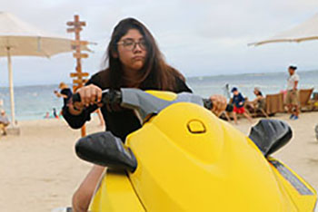

Introduction
I was born and raised in Brooklyn but my parents are from Peru, so I am Peruvian. I am a first generation college student and I love to learn new things and am still amazed at how college can really opens one's knowledge to the world. I used to major in Computer Science but I found a passion for Sociology more after taking the introductory course, so now I am minoring in it instead. I aspire to make a difference in families sepcifically but I don't know exactly how yet. I'm thinking of becoming a Social Worker and possibly doing some Web/Graphic design on the side but I'm not quite sure yet. To go back to the home page click here.
Hobbies
There are a lot of things I like to do in my spare time. Some of the things include:

- Learning different languages
- Oil Painting
- Editing Videos
- Photography
- Digital Media
- Taraveling
I haven't had the time to work on my artwork lately but ut's definitely what I would love to do first in my free time. To find out more about my projects click here.
Club Affiliations
I've been in a lot of clubs in high school, which encouraged me to do the same in college. I have made a lot of friends through different clubs and organizations and that has shaped who I am today. Some of the things that I am in or have been in include:
- Alpha Phi Omega
- Viva Peru
- Opportunities Program
- Women in Computing